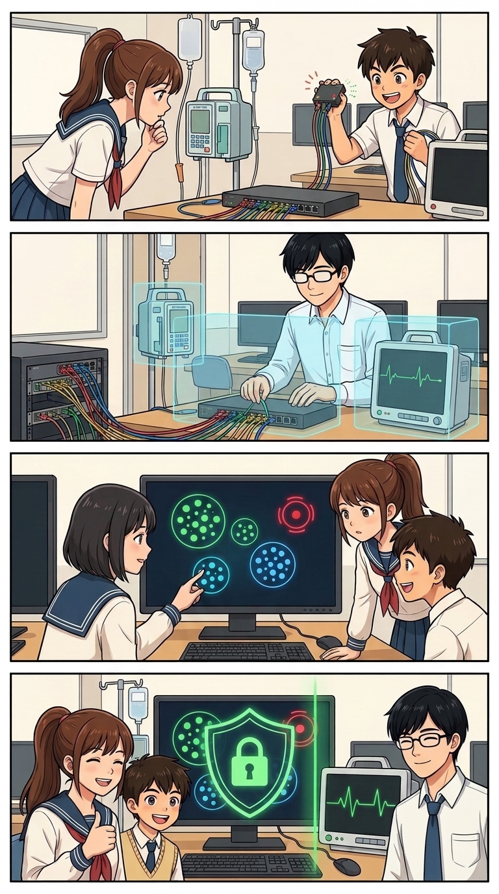
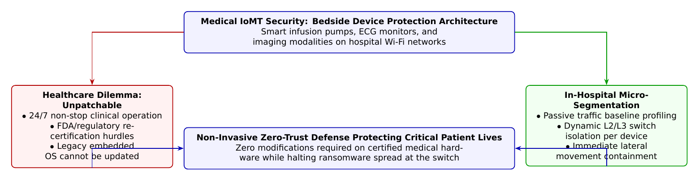

🎨 4コマ漫画挿絵（文字なし）
AI高解像度生成
▲ 【挿絵】青葉台高校 情報科学部＆帝都科学大学サイバーディフェンス・ラボでの実践シーン
💬 4コマ漫画キャラクターセリフ (Story Dialogue Script)
日・英バイリンガル (JA / EN)[蓮]「薬剤の過剰投与やモニタの改ざんが起きたら、患者さんの生命に直結する絶対絶命の危機だよ！」
[Ren] "Rogue dose adjustments or telemetry tampering would cause immediate, fatal harm to patients!"
[結衣]「電子カルテ用のPCがランサムウェアに感染しただけで、同一フラットネットワークを通って全病棟の機器に感染が拡大してしまいます！」
[Yui] "A single ransomware-infected office PC can traverse flat hospital networks and compromise all bedside devices!"
[蓮]「平時の通信パターン（DICOMやHL7）だけを通し、未知の横方向移動（ラテラルムーブメント）はミリ秒で遮断するんだ！」
[Ren] "Only baseline DICOM/HL7 medical flows pass; any rogue lateral movement is killed in milliseconds!"
[全員]「サイバー防衛の知恵で、人命を支える医療の未来を絶対の安心で満たそう！」
[All] "With cyber defense wisdom, we protect the future of medicine with absolute peace of mind!"
📖 小説本文
冬晴れの放課後、青葉台高校の情報科学部室。実験デスクの上には、病院の集中治療室（ICU）で見かけるような本物のスマート輸液ポンプと、心拍や血中酸素濃度をリアルタイムに描画する生体情報モニタが置かれていた。
ピッ、ピッ、ピッ――と規則的な稼働音が部室に響いている。
「……ねえ蓮くん、これ本物の医療機器なの？」
橘葵が恐る恐る点滴チューブの先を見つめた。 「第46話や第47話で、ルーターやWebカメラのIoT機器プロファイリングを学んできたけど、医療の現場でもこんなにたくさんの機器がネットワークに繋がっているの？」
「はい、葵先輩」神崎蓮がネットワークTAP（通信分岐装置）のケーブルを調整しながら説明した。「いま世界中の先進病院では**『IoMT（Internet of Medical Things: 医療モノのインターネット）』**が急速に普及しています。ナースステーションの集中モニタから点滴の残量や患者のバイタルサインを一括管理できるので、医療従事者の過重労働を救う救世主なんです。でも……」
「でも？」
「もしこのネットワークに悪意あるランサムウェアや攻撃者が侵入したらどうなるでしょう？」
白石結衣が、海外の病院を襲った実際のインシデント事例をプロジェクターに投影した。 「攻撃者が輸液ポンプの流量設定パケットを改ざんして薬剤の致死量を投与させたり、心電図の警報アラームを遠隔でミュートにしたり、麻酔器のバルブを勝手に操作することすら技術的に可能であることが報告されています。医療サイバーセキュリティは、単なる情報漏洩の問題ではなく、**『人命の喪失』に直結する極限のサイバー・フィジカル脅威**なのです」
「そんなの恐ろしすぎるよ！」葵が青ざめた。「今すぐ最新のセキュリティパッチを当てて、パスワードを変更すればいいじゃない！」
「それができないのが、医療セキュリティの最も深い闇なんだよ」
ドアを開けて入ってきた城崎悠真が、横浜国立大学SPIRAL（吉岡克成教授、佐々木貴之准教授ら）の最新IoT研究レポートを机に置いた。
---
📊 セキュリティ構造図解 (TikZ LuaLaTeX生成)
国家安全基準・工学図解
▲ 【技術構造図】IPAデジタルスキル標準・国際規格に準拠した仕組みのモデル化